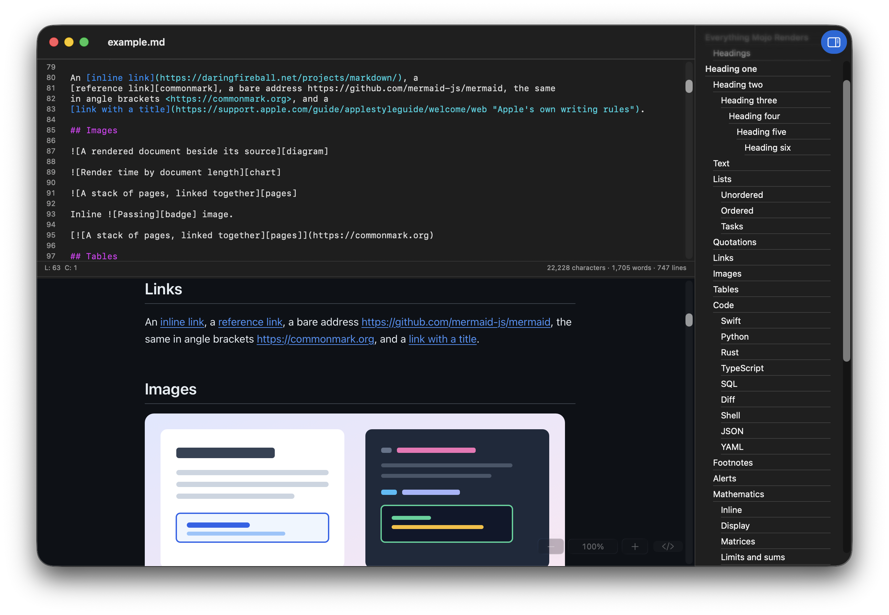
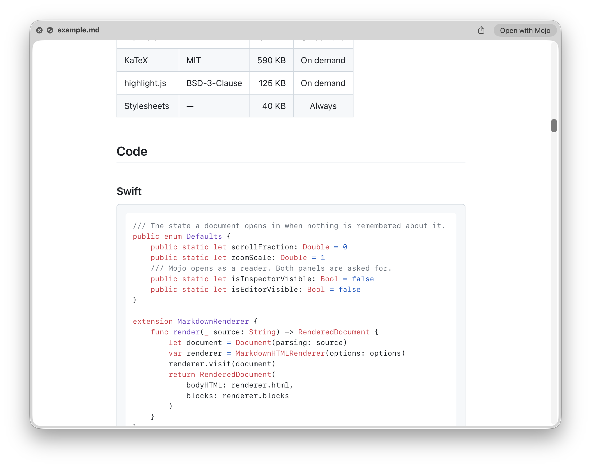
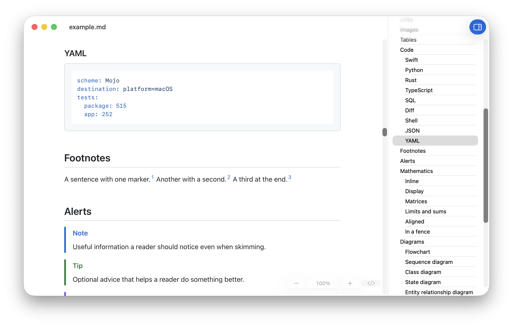
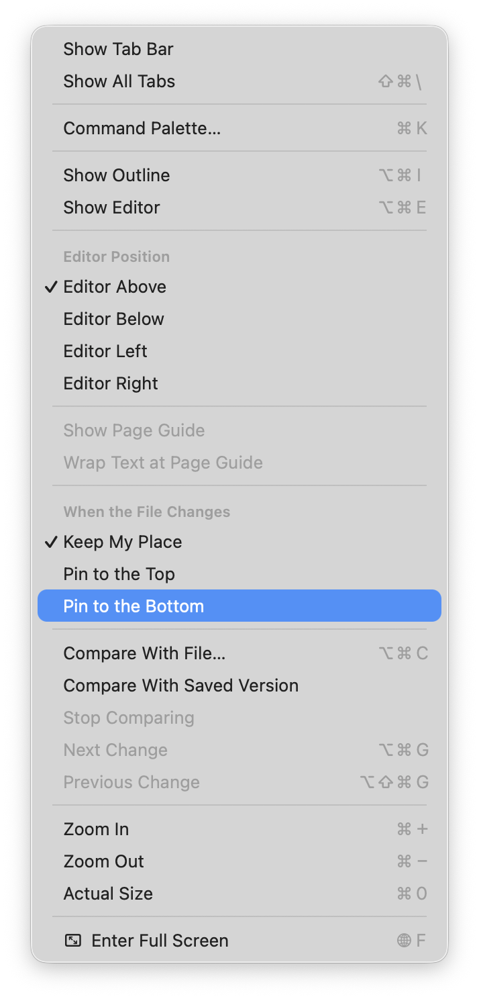
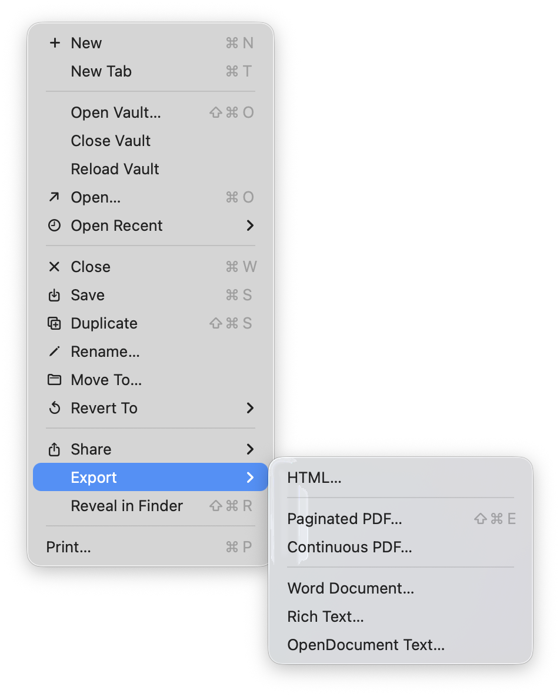
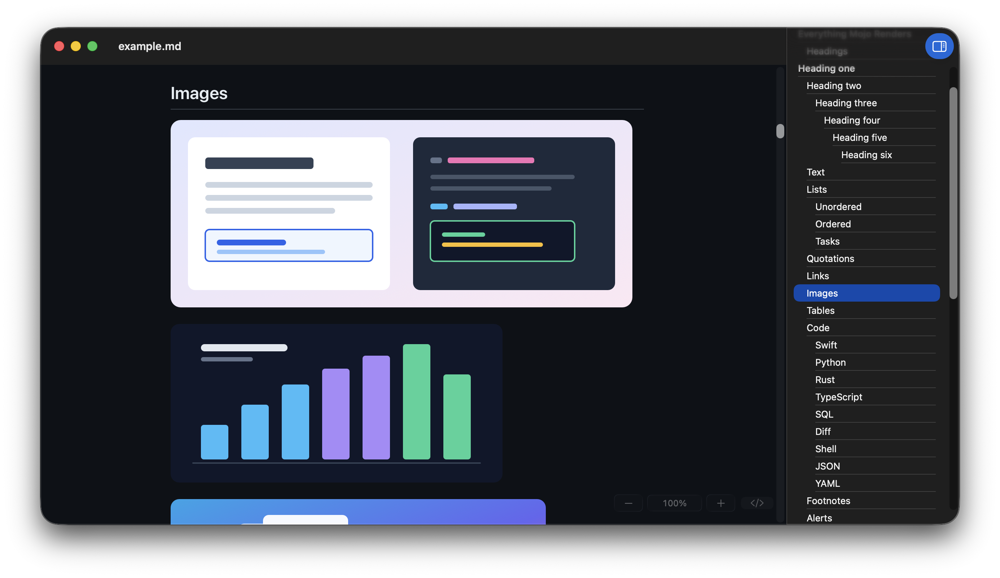
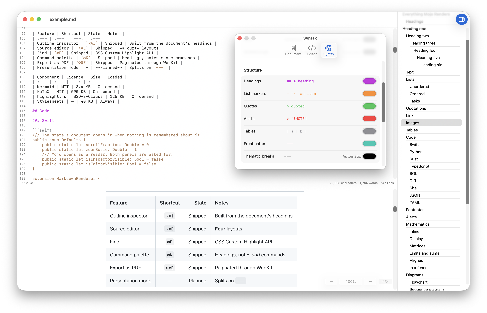
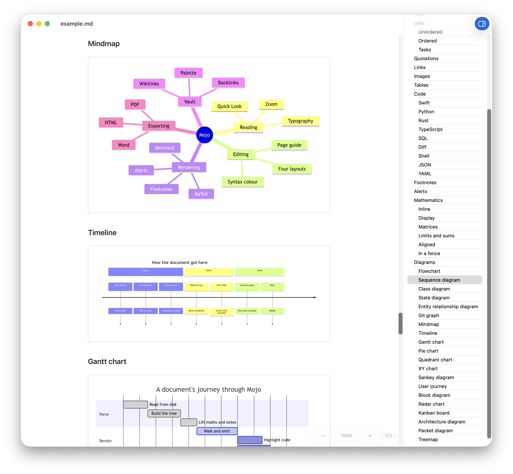
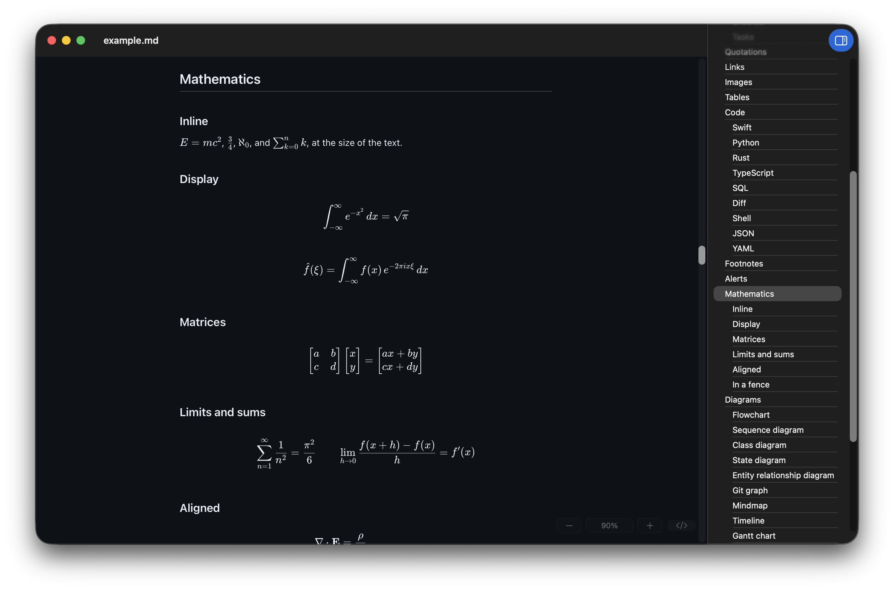

Mojo
Simple, yet powerful markdown.

Native, Mac-first modern design
Dark mode, Dynamic Type, Spotlight, Apple-intelligence support, Auto-save, full undo/redo

Preview files in the finder via a Quicklook plugin

Outline inspector lets you visualise and jump to any part of your document

Handy agentic-tools
Pin to top/bottom of a document and have it update via live-reload

Export to PDF, HTML, Word, RTF, OpenDoc and more
Features

Complete support for all major markdown features
- Alerts
- Tables
- Task lists
- Footnotes
- Images
- Autolinks
- and more

Integrated and full-featured editor with advanced syntax highlighting for 32 languages

Over 20 types of diagram supported
- flowchart
- sequence
- class
- state
- entity relationship
- user journey
- Gantt
- pie
- quadrant
- requirement
- git graph
- mindmap
- timeline
- Sankey
- XY
- block
- packet
- kanban
- architecture
- radar
- treemap
